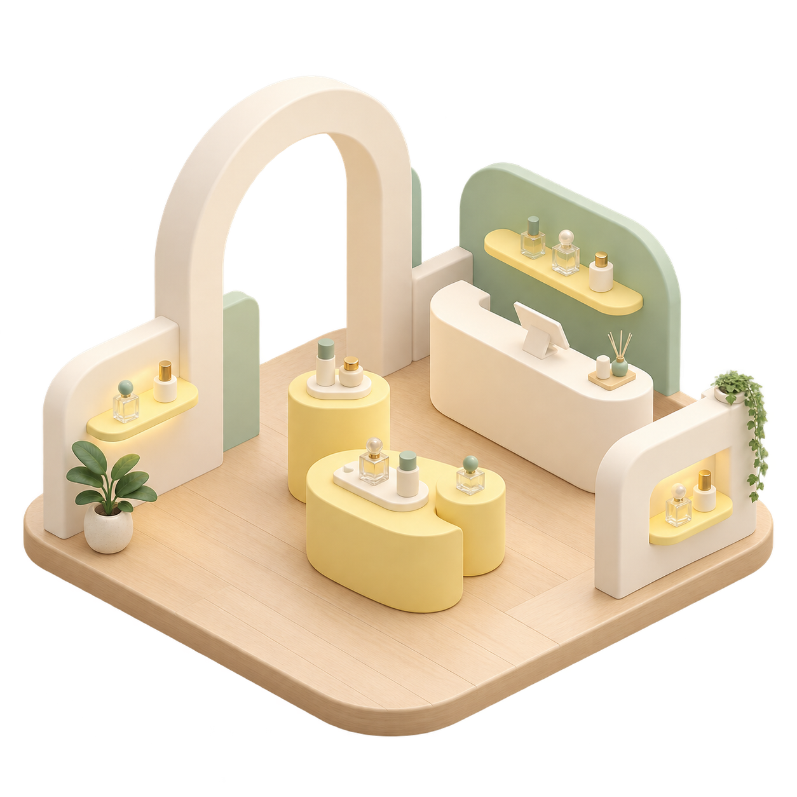
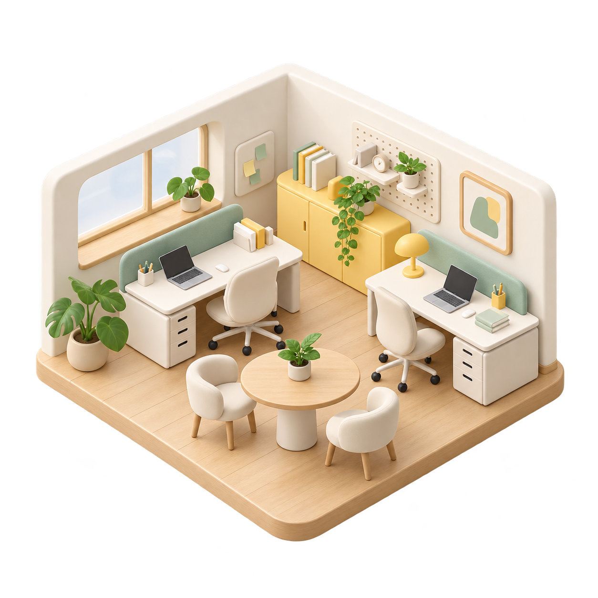

NEMO SPACE STUDIES
공간을 바꾸는 다양한 가능성.
취향과 쓰임이 담긴 공간 콘셉트를 살펴보세요.
공간
스타일
8개의 공간

팝업 · 모던순간을 기억하게 하는 팝업
팝업 · 공간 콘셉트
브랜딩 · 모던
공간으로 이어지는 브랜드
브랜딩 · 공간 콘셉트
스타일링 · 내추럴
취향을 완성하는 스타일링
스타일링 · 공간 콘셉트

사무 · 미니멀일의 리듬을 만드는 오피스
오피스 · 공간 콘셉트
 주거 · 내추럴
주거 · 내추럴자연을 들이는 거실
거실 · 공간 콘셉트
주거 · 내추럴
취향이 머무는 집
거실 · 공간 콘셉트
상업 · 내추럴
다시 찾고 싶은 카페
카페 · 공간 콘셉트
주거 · 모던
손끝으로 느끼는 취향
소재 · 공간 콘셉트
상업 · 모던분위기가 되는 디테일
브랜드 공간 · 공간 콘셉트
주거 · 미니멀
일상의 작은 쉼표
휴식 공간 · 공간 콘셉트
상업 · 미니멀
작지만 선명한 브랜드
매장 · 공간 콘셉트
찾는 공간이 아직 없어요.
검색어를 줄이거나 다른 스타일을 선택해보세요.